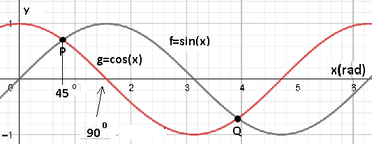

BACK
MATRIK
Nilai :
Jumlah jawaban salah :
Jumlah jawaban benar :
Passing grade : %
pilih 1 jawaban
besar sudut A pada segitiga siku dibawah ini adalah
B A 1 1
panjang garis AB pada segitiga siku
B A 3 3
jika cos C=1/6 maka panjang AB
B A C 3 3
luas segitiga dibawah ini
B A C 5 3 6 adalah
Perhatikan segitiga dibawah ini, sec A =
Perhatikan gambar grafik sinus.
titik potong grafik sinus dan cosinus

perhatikan titik P(3,4)
B A P(3,4) 4 3
jika a=3 dan b=4 serta sudut A=30 maka sudut B adalah
perhatikan garis CD pada segitia siku dibawah
B A C D 1 1 jika AD=BD maka panjang CD adalah √2 1/2.√2 √3 1/2.√3